#
Off-topic Rants
Here are some 15sec videos we produced recently for DMG Radio Australia and Hungry Jack’s. Enjoy!
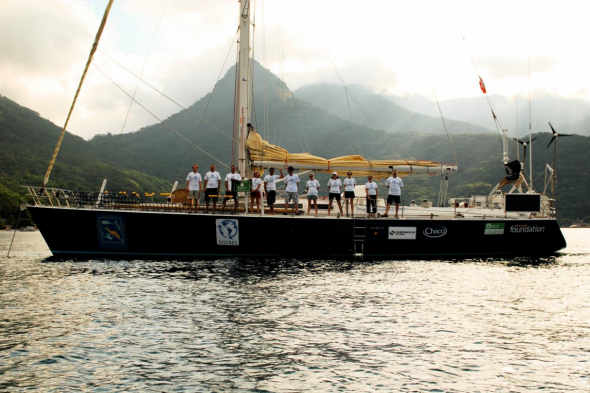
Mike Lutman is a great friend and collaborator, who we’ve worked closely since 2010 when he washed up on our shores from San Francisco. He’s currently working full time as a commercial editor at Melbourne’s award-winning boutique editorial company The Butchery, however as an extremely talented filmmaker in his own right, and a passionate advocate of lessening our footprint on the environment – Mike’s real passion is in creating films that inspire change and highlight environment and social issues that aren’t actively discussed nearly enough. In this blog entry we give Mike the stage to chat about his latest project, PLASTICIZED. Enjoy!
Written by Michael Shanks on 9th June 2013 Michael’s hope for E3 this, and every year. Directed, Edited and Visual Effects by: Michael Shanks DOP: Chris Hocking Production Assistant: Nick Issell Featuring: Laura Lethlean Special Thanks to: Louie McNamara, Ryan Keenan
Meanwhile, in a Parallel Universe… WARNING: This video may contain game spoilers.
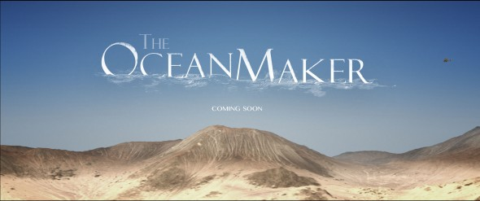
After working in this industry for many years now, one amazing and almost unexpected trend we constantly see is that most people, even if they’re Academy Award Winning, are more than happy to share their knowledge, experience and advice. This is one of the greatest things about the filmmaking world – generally speaking, the most talented people at the top of their chosen craft, are more than happy to chat about the lessons they’ve learnt along their long careers, share tips and trips, and just get people excited. We’re massive supporters and fan’s of people such Stan Winston (who has sadly passed away, however his legacy lives on!), Stu Maschwitz, Andrew Kramer, Mike Seymour, Kanen Flowers, Philip Bloom… the list is almost endless. All of these people are hugely well respected and highly regarded, are expects at what they do, have an amazing list of credits, but still go above and beyond to share their knowledge about the industry they all love. The person we’re chatting to today in this blog entry fits perfectly into this category. He’s stupidly talented, doing absolutely amazing work, but is also more than happy to share his knowledge with like-minded people.
We have thrown together a quick little PDF tutorial on how to import AVCHD footage (specifically footage from a Sony NX5) into Avid Media Composer 6.5 using AMA. This tutorial assumes you are a beginner to Avid Media Composer, so it goes through all the steps in quite a bit of detail.
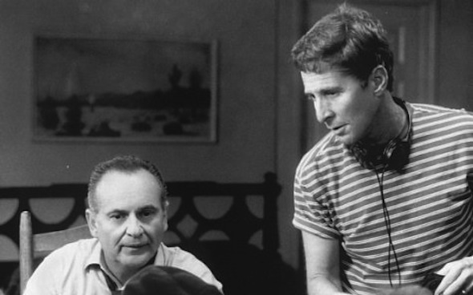
Written by Nicholas Colla on 4th March 2013 tomschulman So day two rolled around and unfortunately due to the commute back and forth from Melbourne I managed to miss what I was told was a brilliant networking breakfast. Although to be honest every time I hear that word networking I cringe a little. I just feel like the word makes me feel like I’m supposed to be friendly with people because I may need them at some stage. I’d rather think of it as an opportunity to meet like minded people in film who i’ll hopefully have long lasting relationships with. Either way I missed it, so onto the first session for the day.
oscars Who should win, will win and the politics of it all… (in my own humble opinion of course!) So it’s that time of year again where the people that you watch on the big screen, and the hard working team that make them look so damn good come together to celebrate another year of films. I’m excited this year because for once I have seen almost all (I’m short a Lincoln and a Zero Dark Thirty) the films nominated in both performance and technical categories. I’m pretty opinionated about stuff like this so please take whatever I say with a grain of salt, no use tearing me to shreds - just a humble movie goer’s opinion.
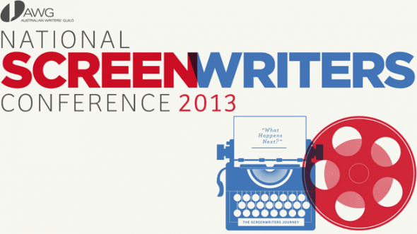
AWG Conference Image 1 On the drive up to the Mornington Peninsula to my first ever National Screenwriters Conference, I thought about what I wanted to get out of the next three days. Somebody had asked me previously why I was going and I couldn’t clearly express exactly why. Sometimes I think about exactly what the hell I’m doing in Film & Television, especially when people ask who I am, what I do and what my profession is. Am I an actor, a writer, a producer, a director, a filmmaker? Is it too bold and egotistical to say all of the above, am I under selling if I only say one? Believe me when I say, it’s a constant confusion.
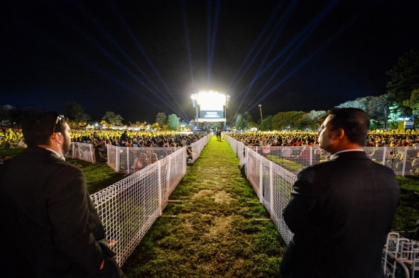
tropfest A couple of days after spending a few glorious hours in the sunshine at the Sidney Myer Music Bowl watching short films and drinking glorious cider, I read an article in the paper that referred to Tropfest (the World’s largest short film competition as we are often told) as the ‘rock show’ of short film festivals. To be fair, i’d say that was pretty accurate.
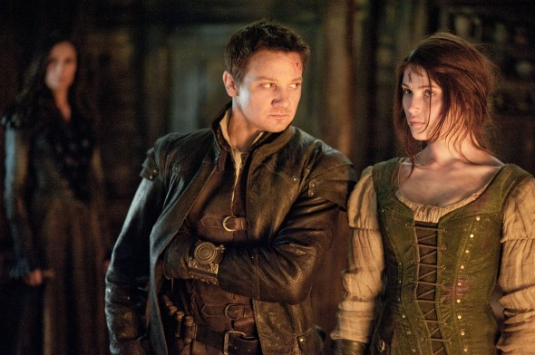
HANSEL & GRETEL: WITCH HUNTERS Now let’s not beat around the bush here. When you go and see a movie titled Hansel & Gretel: Witchhunters, you clearly aren’t expecting a film that is going to have a clean sweep come awards season. What you are expecting though is a great, bad movie. A movie with such a ridiculous concept (and title for that matter) that you are expecting to spend an hour and a half laughing at a bunch of characters in a ridiculous circumstance, perhaps some kick ass action sequences and of course the odd one liner of two (see The Expendables 2 for another great example of this!)
Written by Michael Shanks on 13th January 2013 47 different ways to play. Give or take 47. Director/Editor: Michael Shanks DOP: Sam McCabe Sound Design: Craig Jansson Production Assistant: Chris Hocking Starring: Alistair Marks, Ashley Weidner With: Mark Taylor, Jackson McInerney, Michael Shanks, Louie McNamara, Eden Row
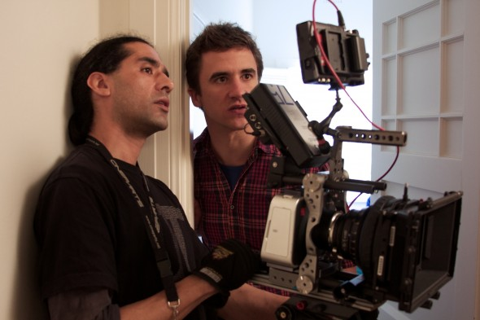
And so we got into the final stretch of the year with the much-anticipated follow up to his debut film Brick from writer/director Rian Johnson with Looper.
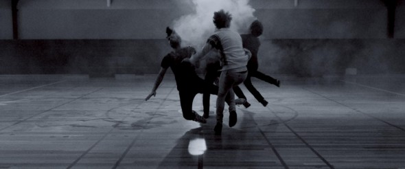
The month of May started off fairly disappointing in the theatres, with films such as The Dictator, Men In Black 3, Get The Gringo and my most hated film
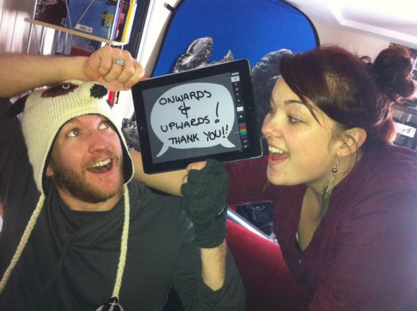
Onwards & Upwards Half our world lies hidden in the depths of the ocean. The Underwater Realm is a series of short films that chronicle five times throughout history when mankind has come into contact with an ancient race of people living beneath the sea.
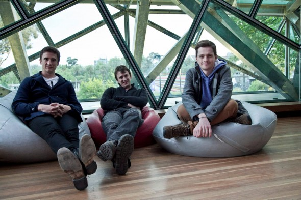
01 A little something that we started last year here at LateNite was to take a moment to reflect on the year that was. The projects, the people, the joy, the tears, the wins, the losses and of course the movies that made 2012. Instead of two enormous blogs though, this year we will be breaking it up into thirds for your reading pleasure and releasing one a week right up until 2013 ticks over, at which point we’ll be revealing some of our exciting new projects in the works.
Essentially, my work as a documentary filmmaker specialises in branded content for non-profit, social and environmental development organisations. The type of projects I choose to be involved in are diverse to an extreme extent, and each experience continues to take me on meaningful adventures around the world. Last month, the location was Kenya and Tanzania (Africa) working for a non-profit foundation from Switzerland, MyClimate.
Anticitizen Fun! Made on a budget of absolutely nothing. Directed, Edited and Visual Effects by Michael Shanks You can find the music on Bandcamp You can find Michael on Twitter You can find Michael on Facebook Starring: Samantha Chiodo and Michael Shanks With: Mark Taylor and Damien Bodie
88 mph? Wipe off 5. Directed, Edited, Sound and Score by Michael Shanks. Download the Soundtrack. Check out Timtimfed on Facebook. Check out Timtimfed on Twitter. Starring – Mark Taylor and Michael Shanks. DOP – Sam McCabe. Thanks to Chris Hocking, Nick Colla, Doc Braun.
It’s no doubt that filming almost 400 cyclists through an (albeit incredibly inspiring) developing nation is an arduous mission. When you also add a film crew that comes from 6 different countries (America, Indonesia, France, Australia, Canada and Timor-Leste) and collectively work in 3 different languages (Tetum, English and Bahasa Indonesia) it gets pretty interesting.
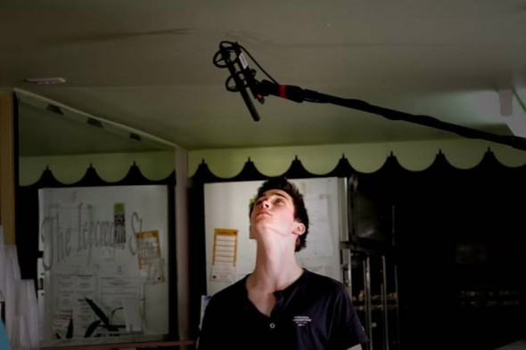
After a solid 1,274 blog posts, one of my heros, Stu Maschwitz has finally taken the time to write a detailed article about the pain of getting good audio, titled Production Audio is Ripe for Revolution. Apart from a really tiny blog post that links to an external article this is the first time that Stu has really even mentioned sound in any great detail – which is telling in itself. What’s really interesting though is the amount of feedback his post has gotten…

This is probably going to be a fairly long blog post, so let’s just start with my personal conclusion in regards to the Blackmagic Cinema Camera: To give you some backstory… At the start of this year, we had the (in retrospect silly) idea to shoot a nice and simple short film on the first weekend of every month, mainly for fun. The plan was to give friends that have helped us out in the past the opportunity to write their own script, and direct or act in it if they wanted. The scripts needed to be really simple – as we needed to shoot the whole thing over a single weekend, with only the gear we could borrow off friends. The intention was to edit and finish them the by the end of the following weekend. We also planned to give friends the opportunity to “step up” into bigger crew positions – for example, we wanted to get people who normally work with us as camera assistants to jump on board as cinematographers.
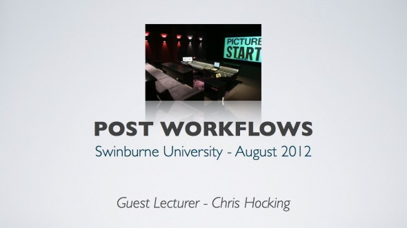
For the last couple of years I’ve been very fortunate to be invited along to Swinburne University to talk to the 3rd and 4th Year Students about the sleepless world of Post Production, and was lucky enough to be invited back again a few weeks ago. I always really enjoy chatting to the students at Swinburne, because having studied there, I can bring a lot of tips and tricks based around the gear they have access to at the University, and also offer advice from not only someone that works in high-end post production (as my “day job” is the Post Production Supervisor at The Butchery & The Refinery), but also someone who works on projects where everything is done run-and-gun and indie-style. I think this is really important, because although it’s nice tell people about jobs with big budgets and fancy cameras – the reality is that a lot of people straight out of University will have to do things with less money, and have to come up with creative ways to achieve the look they’re after.
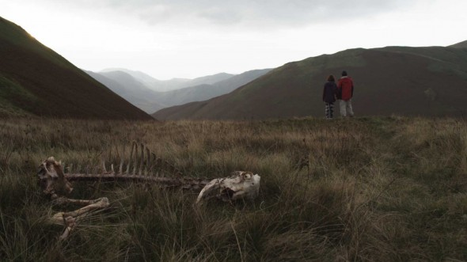
Admittedly I didn’t really know anything about this film going in. I was told that one of my hero’s, the amazing Edgar Wright executive produced it (which basically was the big selling point for me!) – but apart from that all I knew is that it was “bloody” and I assumed it was going to be a comedy. Well… It was definitely bloody – and it definitely had lots of funny moments. However, this is one really bizarre and screwed up film!
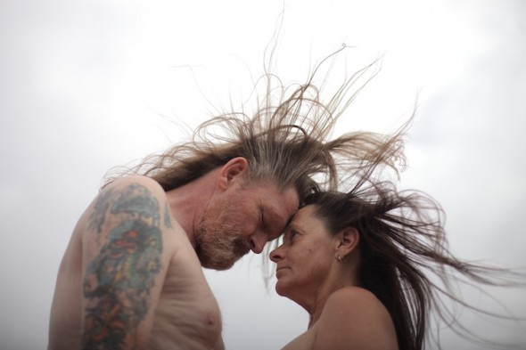
I’ve been waiting to see this film for a very, very, very long time. Admittedly, it’s not the kind of film I would normally seek out to see – as I’m not the biggest fan of drug use and graphic violence up there on the big screen – in fact watching people injecting themselves really freaks me out. But this is a film that I’ve had the privilege of “following” for a very long time because it was edited at The Butchery (where I work three days a week, when I’m not doing LateNite things), by one of my favourite editors and people in the world, the incredible Peter Sciberras (who now works for Method Studios). Because of this, I got to see the glimpses of rushes as they came in, rough cuts every now and again, and also witness just how hard the director, Amiel Courtin-Wilson and producer Michael Cody worked to get this film up and finished. I really didn’t have much to do with the film apart from fixing things in the edit suite when they broke, and making sure that Pete could get on and do what he does best, but I’m so glad I played a small part, because this is one very special film.
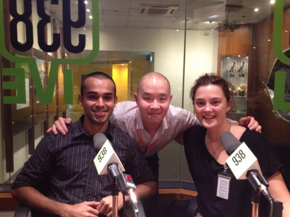
In 2010, LateNite documentary film-maker Jacqui Hocking started working with social entrepreneur Ashwin Subramaniam, the young founder of the GoneAdventurin’ Social Enterprise. The partnership began when she filmed a documentary about his first project cycling in the Tour De Timor in Timor-Leste.
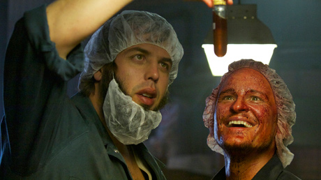
MIFF Weekend #1 So after a cracking start to the festival it was time to indulge in my first weekend at MIFF which usually results in five to eight films spanned across two very long days. I was a little bit excited for this first weekend however as one of the films that I had at the very top of my wish list for this festival was the documentary Paul Kelly: Stories or Me which I had booked in on the Saturday night. But before I start getting all excited about that, first up was the Australian horror/comedy 100 Bloody Acres.
MIFF Day 6. What can you say about Wes Anderson that hasn’t already been said. The man has made a career of making films that are, on viewing, unmistakably his own. Everything from his storybook like cinematography, to his bold production design, to his beautifully crafted soundtracks, to the performance style he enforces on his actors. Wes Anderson is indeed an Auteur in the truest sense of the word.
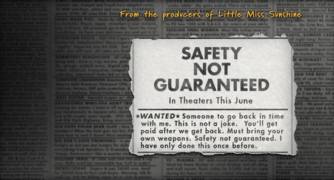
…or Why Our Safety Is Not Guaranteed. The great thing about growing up in the world in which you want to work is that as you get older you start to see friends and people you have worked with in your past start to break through. It’s such a warm feeling to have as in an industry fueled by ego and people that are looking for a cheap shot at fame and fortune, it is always the driven, talented ones without that sense of entitlement who are humbled by what we do that start to excel. Because at the end of the day whether you be involved in music, fine art, theatre, film or any other creative endeavor, it is about telling stories.
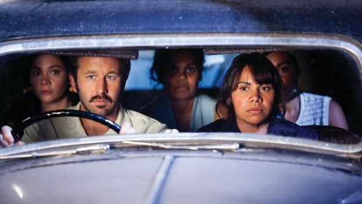
MIFF Opening Night. Best in Years. So it’s probably no surprise for you to all hear that I love the Melbourne International Film Festival. Every year I get super excited when the festival comes around cause it literally allows me to go nuts and watch 50 odd movies in just 19 short days. Some might call it crazy, I think it’s bloody brilliant.
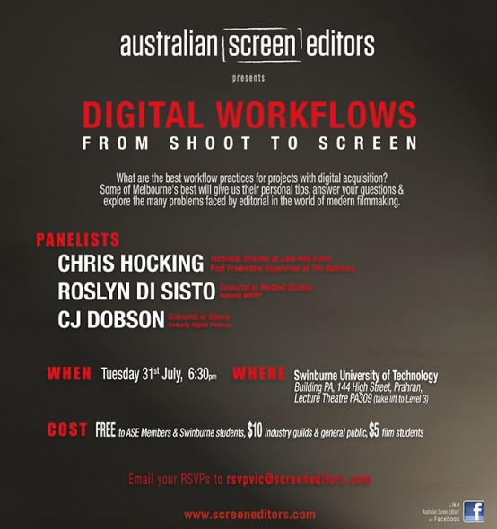
Tonight I had the pleasure of talking to members of the Australian Screen Editors guild about “Digital Workflows”. The event was recorded, so at some stage in the future, I’d imagine you’ll be able to see it online – but in the meantime, here are some quick notes from the discussions, just so that people can easily find things we were talking about.
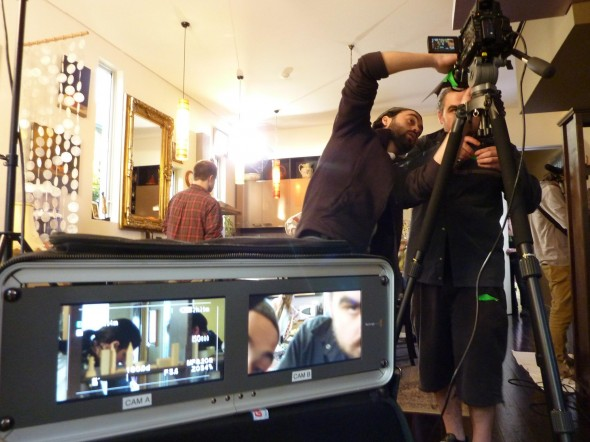
LateNite Films is lucky enough to be situated in the heart of Australia’s upcoming acting scene – 16th Street Acting Studio. As part of our support and collaboration with this inspiring collective, we often work with them on their films. In the last week, I have had the pleasure and challenge of editing more than 22 scenes from various feature films which the students have been studying, Directed by Kim Farrent, who also directed the award-winning documentary, Naked on the Inside.
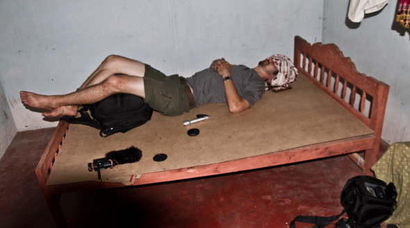
The Making of the tentatively titled documentary, Cycle on Ceylon. Written by Guest Blogger and our very good friend, the amazing Michael Lutman. Jacqui Hocking of LateNite Films trying to bargain my safe return with my parents in the USA in order to help fund the film. Thankfully BP de Silva stepped in as my parents do not have enough money to save their hostage kept son.
All good ‘Payne’ puns have been made. No Description then. Directed, Edited, Sound and Score by Michael Shanks.
It’s like Toy Story, only shittier. Directed, Edited, Sound Design and Score by Michael Shanks.
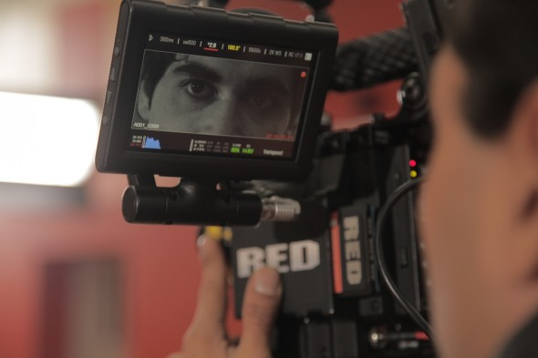
Up until this year LateNite has never really dabbled in music videos. It seems like an odd choice considering some of my favourite directors started in music videos. People like Spike Jonze, Michel Gondry, Marc Webb, Mike Mills, Anton Corbijn and even David Fincher all made a blistering start to their careers by playing around and experimenting with their style through the predominantly visual medium that is music videos.
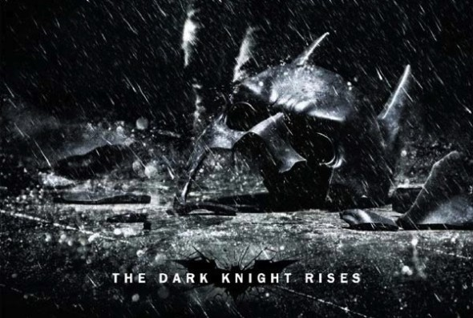
Ok so it’s been a while since I’ve written a blog entry. I’d like to blame the fact that I’ve been extraordinarily busy with projects (which is no lie, I totally have) but really there is no excuse for not taking 10min to write a cute little blog post.
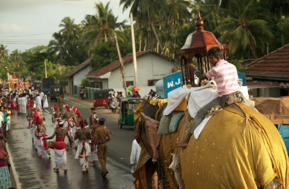
Last April I flew from Rio (where my TOPtoTOP footage will be shown at the Rio20+ World Earth Summit) - to Sao Paulo to meet, film & play with World X Cycle. It was an amazing weekend. I flew back to Melbourne (with all my C02 emissions being offset by MyClimate) and finalised post for my short TOPtoTOP doco on Saint Helena Island, before I started preparing for the next major project in Sri Lanka. We just finished filming last week - here’s a sneak peak:
Here is an exciting video clip Directed, Edited and Performed by Michael Shanks, for his own band, Roadgeek. Winner of Best Music Video (shared with David Michôd for his clip Loveless by Children Collide) and Best Independent Music Video at the 2012 St Kilda Film Festival – SoundKilda Competition.
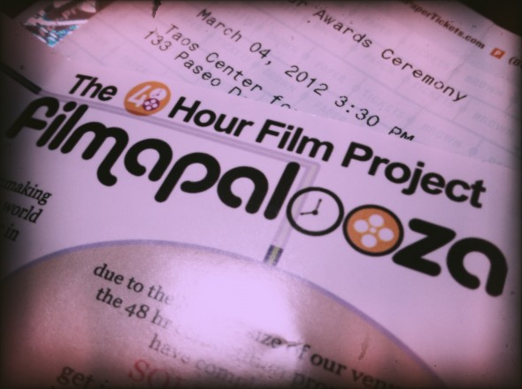
First up… some people are a tad confused as to why I’ve called this blog post Filmapalooza 2011, and not 2012. No, I haven’t forgotten what year it is (surprisingly!) – it’s just that the competition is for films we all did LAST YEAR. Given that our film was shot and competed in the 2011 national competition, it made sense to label the blog post 2011. Hope that makes sense! Now… on to the blog…
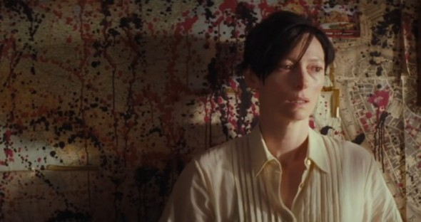
Great Story. Check. Solid Production Values. Check. Performances………whoops. Time and time again I see this problem with low budget filmmaking. And it’s a problem, that as an actor and a filmmaker, really annoys the shit out of me when it comes to indie film.
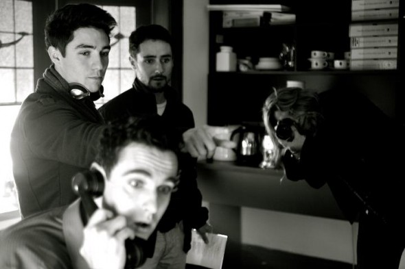
So just before Christmas you heard about the first 6 months which were very exciting at LateNite HQ, so who would have thought the next 6 were going to be even busier…
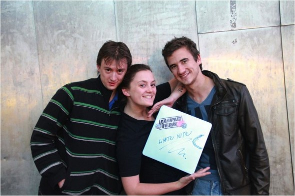
And what a bloody busy year it has been at LateNite HQ! As the year comes to a close, we here at LateNite feel like it’s important to reflect on an incredibly tough but ultimately rewarding 2011. To complement our stories of sex, drugs and rock ‘n’ roll (hardly) I have decided to throw in some of the great films that were released over the last 12 months. All of which have my personal seal of approval – which is all you need really!
Some of you might be wondering why Ryan Gosling is worth an entire blog post. Or perhaps why a young man in his mid 20’s (and not a horny girl/woman between the ages of 15 - 40) is writing about Ryan Gosling at all. The reason is this. On reflection this year (arguably 2-3 years even) has been all about the Gosling Factor. His choice of script, director and in turn film has been impeccable with him being involved with some of my favourite films from the past few years. To add to that not only have they been great films in their own right, but a diversity of films from the star studded dramedy Crazy Stupid Love, to the disturbing but artistically beautiful Drive, to finally the taut political thriller The Ides of March.
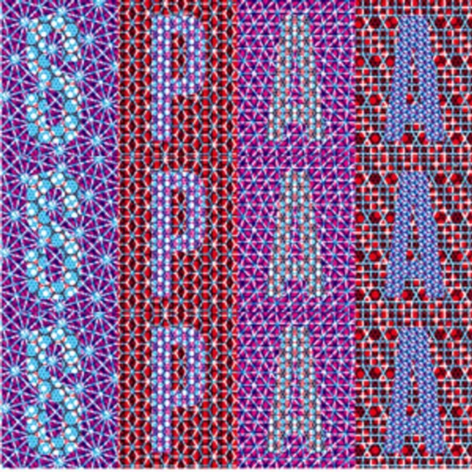
What an absolutely exciting and intense few days it’s been! For those that don’t know, I was fortunate enough to be excepted into the Emerging Producers Scheme, allowing me to attend the SPAA Conference in Sydney, which has literally just wrapped. The Scheme is designed to subsidise and assist newer members of the industry to attend and participate in the Conference by offering a carefully selected group of producers the opportunity to attend the festival at a reduced rate of $770, as well as giving participants the “tools” they need to best “work” the conference.
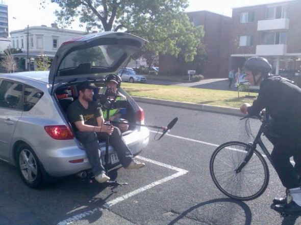
What an incredible weekend it’s been, and it’s only going to get more exciting as the days and months go on! For those that don’t know us – for the past three years we have entered into the 48 Hour Film Project competition in Melbourne. We absolutely love it – because it forces you to “bash out” a film over a weekend, with no excuses. You can’t delay things, you can’t reschedule, you just need to make it happen – which is what we’re really all about.
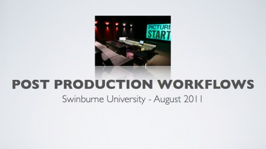
Back in October last year, I was invited to speak to the 3rd and 4th year students at Swinburne University about Post Production Workflows (if you haven’t already, you can read about everything I discussed last time here). A couple of weeks ago I was invited back again to cover the same sort of thing with a whole new bunch of 3rd year students.
UPDATE (26th January 2017): As Brad mentions in the comments below, you can now download the TC.XLAM 2.0 beta, which is no longer password protected and works on modern versions of Excel. For those that no longer use Excel, there’s also a Google Sheets version explained here.
I would like to firstly apologise to all our teamsters out there who have been disappointed with our lack of blogging in recent times. It has been a busy one for the whole team so we have unfortunately been snowed under with work. Also, for those of you have been long time followers of this blog, this is the first time Chris has let me (Nick) actually write something – so that’s exciting in itself!